具身智能要从数据里学的，除了画面中有什么，还有人在什么位置、怎样接近物体、何时接触、如何完成操作。第一人称数据把环境、身体运动和操作过程记录在同一条时间线上，模型可以从连续示范中学习任务上下文和动作结果。这些数据要用于训练、复现和评估，每一帧都需要可信的时间与空间定义。
真实采集覆盖工厂作业、商超物品取放等场景（图 1）。下文以酒店客房整理为例说明观测要求：桌面上有水杯、托盘、遥控器、纸巾和包装垃圾。采集人员俯身把水杯放回托盘，同时拾起纸巾，再把垃圾移到桌边的垃圾桶。人做起来很自然，采集系统却要同时应对头部转动、双手协同、近距离接触、透明物体和不断变化的遮挡。
下面从这段操作出发，说明第一人称视觉数据录下来之后，还要做哪些工作才能被使用、检验和追溯。本文先分析任务对观测的要求，再介绍已适配的头环与腕部设备，并结合样例标定建立空间与时间约定。全文只讨论视觉与视觉惯性观测，手部姿态估计和人到机器人的动作映射不在本文范围内。
01 为什么第一人称数据需要工程设计
头部视角能看到桌面、托盘和垃圾桶之间的整体关系，腕部视角离手与物体的接触位置更近。两者互相补充，但都有看不全的时候：转头时水杯可能离开头环中央视野；抓杯时手指遮住杯口；手腕翻转后，腕部相机可能只看见桌面一角。
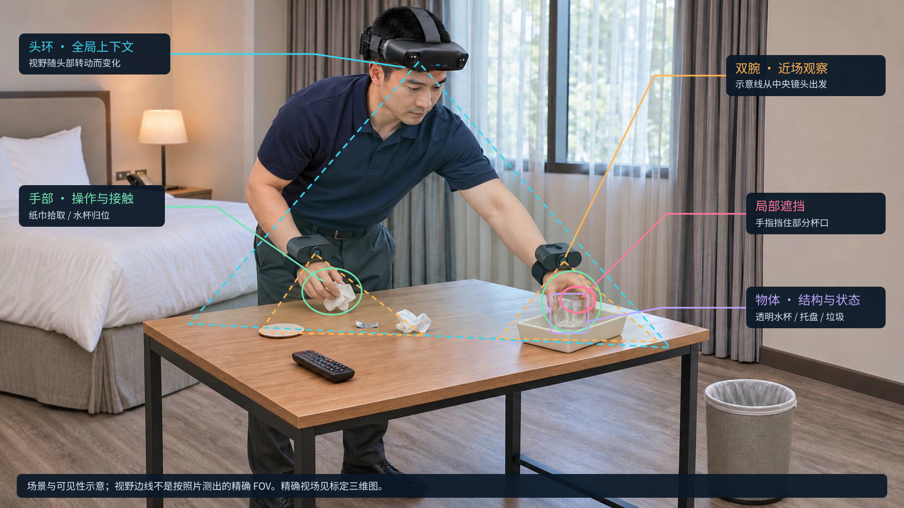
| 场景中的变化 | 数据面临的问题 | 对应的工程要求 |
|---|---|---|
| 俯身找物、转头观察 | 运动模糊、目标离开视野 | 关注曝光与成像模式，验证覆盖和连续跟踪 |
| 水杯放回托盘 | 透明材质、反光、接触边界不清 | 保留原始图与无效标记，分区域评估深度 |
| 纸巾被抓起 | 手物遮挡、细节与形变 | 组合头腕视角，统计操作区实际可见性 |
| 垃圾移向桶口 | 多设备相对运动、帧间时差 | 软同步配对，保留时间差与动态相对位姿 |
所以采集方案要围绕任务来设计，回答这几个问题：镜头是否覆盖操作区，近场物体是否有足够细节，设备是否妨碍动作，时间偏差是否会破坏跨视角对应。多装相机只是增加潜在观测，实际可用的覆盖还取决于佩戴、遮挡、曝光、同步和几何处理。
我们把具身智能的数据壁垒归为三项：设备产能支撑持续采集，真值产线把观测转化为可用于训练的真值，场景产能提供任务与环境的覆盖。data scaling 需要三者同时到位，数据规模增长时，质量和场景覆盖才跟得上。
本文讨论设备产能，即我们已支持的头环与腕部观测设备，以及配套的标定、同步和数据处理。它们给后续真值产线提供时空关系明确的观测输入；随数据保存的标定与元数据，则建立起数据、设备和传感器参数之间的血缘关系。
星河数采无本体设备产能
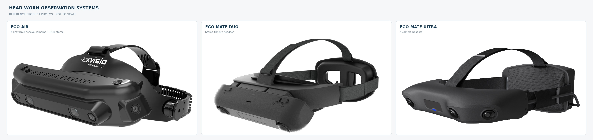
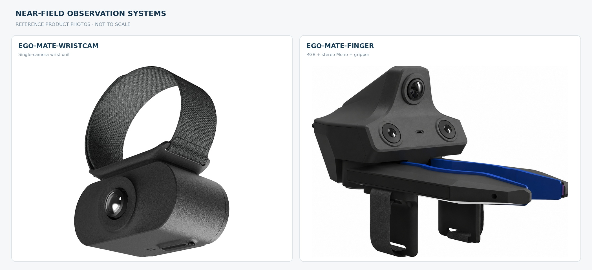
我们已支持三款头环和两款腕部观测设备。头环记录场景上下文，腕部设备补充近场手物交互。选型要同时考虑任务覆盖、成像质量和佩戴负担。
2.1 头环观测设备
| 候选传感器／模组 | 分辨率与帧率模式 | 快门与读出 | 镜头／有效 FOV | 同步能力 | 系统约束 | 选用或排除原因 |
|---|---|---|---|---|---|---|
| Ego-Air；4 路灰度鱼眼＋RGB 双目，共 6 路相机 | 灰度各 640×480、30 fps；RGB 各 1600×1200、60 fps | 全局快门 | 鱼眼对角 ≥160°；RGB H159°／V95° | 相机组硬同步，见 3.2 | IMU 500 Hz；USB 3.0、Wi-Fi 6；最大功耗 4 W | 更多灰度相机辅助空间定位；板载算力充足，可在线运行定位与手部出画检测 |
| Ego-Mate-Duo；双目鱼眼，标称基线 120 mm | 1600×1200、30 fps | 全局快门 | 单路 H165°／V130° | 硬同步，见 3.2 | IMU 400／1000 Hz；约 250 g、<2 W；USB 2.0、TF 卡 | 三款头环中单价最低，性价比高 |
| Ego-Mate-Ultra；前向双目＋侧向相机，前向基线 100 mm | 1600×1200、30／60 fps | 全局快门 | 此模式单路 H165°／V130°；标称拼接 H281° | 四目硬同步，见 3.2 | IMU 400／800／1000 Hz；相机 <420 g、<6 W；USB 3.0、主动散热 | RGB 组合视场大，与腕部图像的视场重叠范围更大，有利于腕部定位 |
2.2 腕部观测设备
| 候选传感器／模组 | 分辨率与帧率模式 | 快门与读出 | 镜头／有效 FOV | 同步能力 | 系统约束 | 选用或排除原因 |
|---|---|---|---|---|---|---|
| Ego-Mate-Wristcam；每侧独立单目鱼眼 | 1600×1200、30／60 fps | 全局快门 | H165°／V130° | 单目；跨设备软同步，见 3.2 | IMU 400／1000 Hz；单设备约 75 g、<2 W；USB 2.0、TF 卡 | 轻量腕戴，补充自然徒手操作的近场观测 |
| Ego-Mate-Finger；RGB＋Mono 双目，基线 50 mm，带夹持机构 | RGB 1600×1200；Mono 各 1280×960；30／60 fps | 全局快门 | RGB H165°／V128°；Mono H137°／V100° | 设备内相机硬同步，见 3.2 | IMU 400／800／1600 Hz；单设备约 320 g、典型 <3 W；TF 卡 | 手持／夹持任务中的彩色与双目几何观测 |
2.3 围绕任务选择设备组合
头环可以按在线处理需求、部署成本和跨设备共同视野来选，再通过试采，结合操作距离、遮挡和跟踪连续性，检查所选设备能否覆盖关键动作。
自然徒手示范可以用轻量的 Wristcam。允许夹持工具、需要近场双目观测的任务可以评估 Finger，但要考虑它的重量和夹持机构对动作的影响。头环与腕部各自独立运动，两者的关联要靠共同视野、时间对齐和后续定位来建立。
验收时还要在实际室内光照和动作速度下检查细节、模糊、噪声和过曝。全局快门消除不了曝光期间的运动模糊；分辨率和帧率越高，带宽、存储、功耗与散热的负担也越重。选定的组合要能持续覆盖关键操作，同时尽量少干扰采集人员的动作。
03 建立可信的空间与时间坐标
头环看见水杯、腕部看见抓握位置，这两张图还不能直接合在一起用。要先回答几个问题：每个像素对应哪一条空间射线，两个画面记录的是不是同一次接触，相机位姿是相对头环、腕部还是共同地图表达的。投影模型、坐标变换和时间语义都定义清楚之后，多路视频才能用于计算。
本章使用四组现有样例：Ego-Air、Ego-Mate-Duo＋双侧 Wristcam、Ego-Mate-Duo＋双侧 Finger，以及 Ego-Mate-Ultra。文中分开写三类内容：标定文件里已有的参数，由这些参数算出的结果，以及投产前还要验证的条件。有标定文件，不代表已经通过精度验收。
3.1 相机模型、内参与外参
3.1.1 常用模型及其选用依据
工程上常把非线性成像统称为“畸变”，其实它包括两类：针孔投影之后的径向／切向修正，以及直接改变投影几何的鱼眼模型。一个相机模型要同时定义三维点到像素的投影 π() 和像素到单位视线的反投影 π⁻¹()；FOV 计算、极线校正和 VIO／SLAM 都要用到反投影。
设相机坐标中的三维点为 ，各模型先得到像面坐标 ，再转换为像素：
其中 为像素单位焦距， 为主点；以下省略 skew（像素轴倾斜）项。针孔、Brown 和表内 OpenCV fisheye 写法使用 ，记 、、。
| 模型 | 投影／畸变公式与参数 | 适用场景 | 选用依据与注意事项 | OpenCV 4.x API（Python） |
|---|---|---|---|---|
| 理想针孔 Pinhole | 。 仅有 ，无畸变参数。 |
畸变可忽略的成像，或已去畸变／校正的虚拟相机 | 接口简单，但不能直接代替原始鱼眼模型；校正图必须关联新内参、输出尺寸和有效区域 | cv2.projectPoints，distCoeffs=None 或全零 |
| Radtan／Brown–Conrady | 。 。 。 控制径向畸变， 控制切向畸变；五参数顺序为 。 |
常规镜头、中等广角、工业视觉及依赖成熟针孔接口的双目链路 | 工具支持广；超广角边缘可能拟合不稳。四参数、五参数和八参数有理式是不同配置，系数不能随意截断 | cv2.calibrateCamera；cv2.projectPoints；cv2.undistortPoints；cv2.initUndistortRectifyMap |
| Equidistant／Kannala–Brandt（常见 KB4） | 。 。 。 修正入射角到像面半径的关系；全零时为理想等距投影，仍不是针孔投影。 |
鱼眼相机、环视、机器人 VIO／SLAM | 适合强径向非线性；反投影通常需要数值求逆，要检查多项式单调区间和库的有效域；KB、fisheye 标签相同，实现未必相同 | cv2.fisheye.calibrate；cv2.fisheye.projectPoints；cv2.fisheye.undistortPoints；cv2.fisheye.initUndistortRectifyMap |
| Mei 全向模型（UCM＋Radtan） | 。 。 。 。 。 控制球面投影的偏移；其后施加径向／切向修正，，与 分开传入。 |
单视点全向、折反射与大视场鱼眼相机 | 在 UCM 投影后补充径向／切向畸变；需检查有效域。接口位于 OpenCV contrib 的 ccalib 模块，参数不能直接作为 EUCM 或 DS 使用 |
cv2.omnidir.calibrate；cv2.omnidir.projectPoints；cv2.omnidir.undistortPoints；cv2.omnidir.initUndistortRectifyMap |
| EUCM | 。 。 。 控制分母两项的混合， 控制横向平方项的权重；额外参数为 。 |
大视场机器人视觉、需要高频像素—射线转换的定位系统 | 参数紧凑、反投影有闭式形式；要检查参数及根号的定义域，明显非对称的畸变仍可能残留 | calib3d／ccalib 无直接对应的标准模型 API；需实现投影／反投影，再用 cv2.remap 重采样 |
| Double Sphere（DS） | 。 。 。 。 控制球心的相对偏移， 控制投影分母的混合；额外参数为 。 |
超广角、多鱼眼 VIO／SLAM | 投影与闭式反投影便于实时计算；仍需验证边缘拟合、有效域和下游库支持，不能直接套用其他模型的参数 | calib3d／ccalib 无直接对应的标准模型 API；需实现投影／反投影，再用 cv2.remap 重采样 |
3.1.2 样例中实际使用的模型
| 样例设备 | 文件中实际出现的模型与尺寸 | 本文采用的解释及边界 | 标定文件样例 |
|---|---|---|---|
| Ego-Air | fisheye.json 中 4 路 SEUCM，640×480；RGB SEUCM，1600×1200 |
SEUCM 含 α, β，现有适配按 EUCM 公式解释；这一解释还要用图像对应验证，单凭字段不能认定与厂商定义完全等价 | JSON 字段结构 |
| Ego-Mate-Duo＋Wristcam | 相机 YAML 的 cameras 分支为 KB；本组头环和腕部标定均为 1600×1300；头环 IMU YAML 另含 Brown 参数 | 相机几何用相机文件中对应尺寸的 KB4；相机—IMU 外参单独读取，IMU 文件里的另一组 Brown 内参不混入 KB 图像处理 | YAML 字段结构 |
| Ego-Mate-Duo＋Finger | 头环 KB，1600×1200；Finger 的 cameras 分支为 KB，RGB 1600×1200、Mono 1280×960；另有 cameras_ext1 的 kb10 分支 | 按明确的分支成套使用内参、畸变与外参，不能只把 kb10 的部分系数填进 KB4。流名 IR_L/IR_R 只作为文件标识保留，不据此推断主动红外工作方式 | YAML 字段结构 |
| Ego-Mate-Ultra | 4 路相机均为 KB，1600×1200；本组 k5, k6, p1, p2 均为零 | Rig 可视化使用 cameras 分支的 KB4 原生标定，不裁剪、不缩放，也不借用规格书标称 FOV 生成视场 | YAML 字段结构 |
3.1.3 坐标与变换约定
下文统一用 T_A_B 表示从 B 坐标系到 A 坐标系的变换，长度单位为米：
相机采用右手系：X 向右、Y 向下、Z 向前；IMU 坐标轴以标定文件为准。头环与腕部独立运动，两者的相对位姿随时间变化。
3.1.4 Rig Visualization
通过统一的 Rig Viewer 查看各组设备的相机位置、朝向、双目基线与标定视场，并结合人体示意对照头环与腕部的观测覆盖。
3.1.5 布局与观测覆盖
双目头环提供前方重叠视野，四目头环通过侧向相机扩展周边覆盖；腕部设备随手独立运动，其相对头环的位姿需要后续估计。视场锥表示标定模型的覆盖，实际有效观测还受遮挡和成像区域限制。
3.2 时间同步与曝光时序
头部与手部持续运动，多路观测需要在时间上对齐，才能描述同一次操作。已支持设备采用以下同步方式：
| 同步关系 | 当前方式 | 数据表达 |
|---|---|---|
| 设备内多相机组 | 时间硬同步 | 同一快门时刻采集；例如 stereo_left 与 stereo_right 的对应帧共享时间戳 |
| IMU 与相机 | 时间软同步 | 将 IMU 采样与相机帧对齐，保留时间映射 |
| 跨设备相机 | 时间软同步 | 为头环与腕部图像建立时间对应，保留原始时间、配对关系与时间差 |
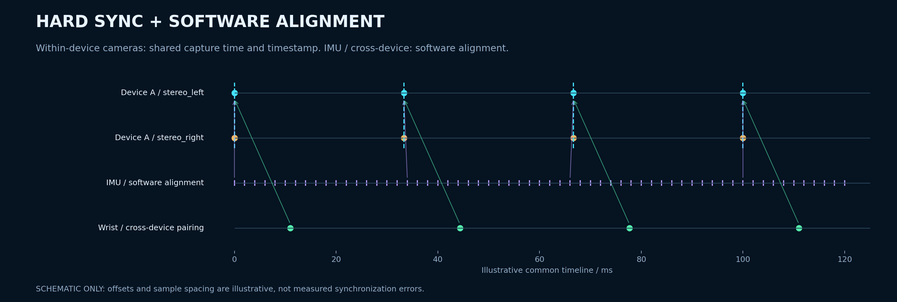
每路时间戳需明确时钟域、单位、时间原点及曝光时刻语义。软件对齐不改变原始采样时刻，因此交付时保留原始时间与对齐后的关联，并按任务要求检查配对时间差和观测缺口，标记不满足要求的片段。
3.3 出厂标定、投产前验证与数据—设备追溯
我们以设备出厂标定作为处理输入，正式投产前固定标定参数，通过极线校正、视差／深度、特征匹配、全景和定位结果反向验证其适用性，具体方法见第四章。
标定参数随采集数据一起落盘，与会话、设备、传感器流和采集模式关联。后续处理使用该次采集的标定快照，并记录时间映射、处理配置与版本，形成数据到设备、传感器参数及派生结果的血缘：
原始帧／IMU 采样
→ 采集会话＋设备标识＋传感器流＋原始时间
→ 本次采集的标定快照＋采集模式
→ 时间映射＋处理配置与版本
→ 校正图／深度／位姿等派生结果
复核或重处理时，按会话与传感器流查找对应的原始帧、标定快照和处理配置。
第四章：从图像处理到空间定位，验证数据是否适用
第三章定义了空间与时间约定。本章检查这些图像、IMU 和标定放进实际算法后能否一起工作。
本章用三组结果逐层检查：双目能否建立深度关系，多目能否形成连贯视野，连续运动中的头环与腕部能否进入同一空间。三组结果检验的是数据和处理链路合在一起是否适用，不能逐项证明每个传感器、每组标定参数都准确。
| 验证链路 | 本章真实材料 | 重点检查 |
|---|---|---|
| 双目校正 → 视差 → 公制深度 | Ego-Air RGB 双目的同帧图像与深度数组 | 像素对应、纵向残差、深度尺度及无效区域 |
| 多路视角 → 柱面全景 | 多目头环的连续拼接视频 | 重叠区域、接缝、近场视差与运动中的稳定性 |
| 各设备 VIO → 跨设备定位 → 共同坐标系 | Ego-Mate-Duo＋双 Wristcam 的定位回放与后端统计 | 图像／IMU 的连续可用性、共同观测及动态相对位姿 |
4.1 双目：从极线校正到视差与深度
深度是第一人称数据中重要的几何信息。它为 RGB 观测补充物体距离、场景结构与空间尺度，为后续空间定位、三维建图和手物交互分析提供几何输入。
估计深度的另一个目的，是反向验证标定精度。双目深度依赖内参、畸变模型、基线与相机间外参；标定不准确可能表现为极线错位、三维结构变形或深度尺度偏差。因此，极线对齐、深度结构和跨视角重投影的一致性，可以共同佐证标定的适用性；与独立测距参考比较，则能进一步量化深度误差。
这条处理链路从极线校正开始：根据内外参和畸变模型重映射图像，使同一空间点在校正后的两幅图中落在同一像素行，便于沿水平方向估计视差，再将视差转换为深度。
以下以 Duo／Ultra 的 KB4 双目为例，使用 OpenCV fisheye 完成校正与重采样。K1/K2 是与输入图像尺寸匹配的内参，D1/D2 按 k1, k2, k3, k4 排列；R, t 将左相机坐标变换到右相机坐标，平移单位为米。
import cv2
def rectify_kb4(left, right, K1, D1, K2, D2, R, t):
# 内外参为浮点 NumPy 数组；左右图像尺寸相同。
size = (left.shape[1], left.shape[0])
R1, R2, P1, P2, Q = cv2.fisheye.stereoRectify(
K1, D1, K2, D2, size, R, t,
flags=cv2.fisheye.CALIB_ZERO_DISPARITY,
newImageSize=size, balance=0.0,
)
map1 = cv2.fisheye.initUndistortRectifyMap(
K1, D1, R1, P1, size, cv2.CV_32FC1,
)
map2 = cv2.fisheye.initUndistortRectifyMap(
K2, D2, R2, P2, size, cv2.CV_32FC1,
)
left_rect = cv2.remap(left, map1[0], map1[1], cv2.INTER_LINEAR)
right_rect = cv2.remap(right, map2[0], map2[1], cv2.INTER_LINEAR)
return left_rect, right_rect, P1, P2, Q
Ego-Air 的 SEUCM 需按自身投影模型生成映射，再用 cv2.remap 重采样。下图保留其已有的校正与视差结果，用于展示检查方式，不是上述 KB4 代码的输出。
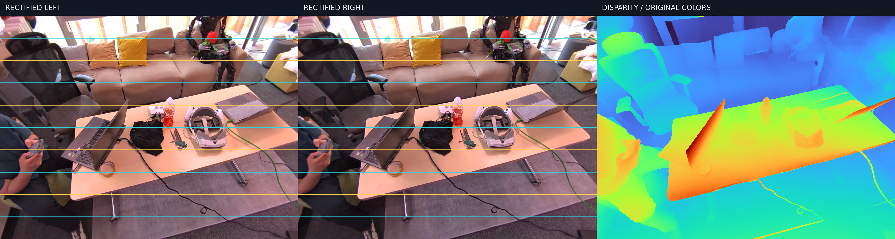
单帧的 689 对候选匹配中，绝对纵向差的中位数约为 3.8 px，P95 约为 8.4 px。候选点尚未通过几何误差筛选，仍需在多帧上复核。
在校正后两目焦距与主点相同的水平双目中，视差 可转换为深度：
为校正后的水平焦距（px）， 为基线（m）， 为视差（px）， 为沿校正后左相机光轴的深度（m）。图像若经过缩放，焦距与视差也需使用对应分辨率下的数值。
对上述双目深度关系作一阶微分，小幅参数偏差对深度的影响可近似写为：
它说明焦距、基线的标定偏差与视差估计偏差如何传递到深度，为从深度结果反向检查标定提供依据。
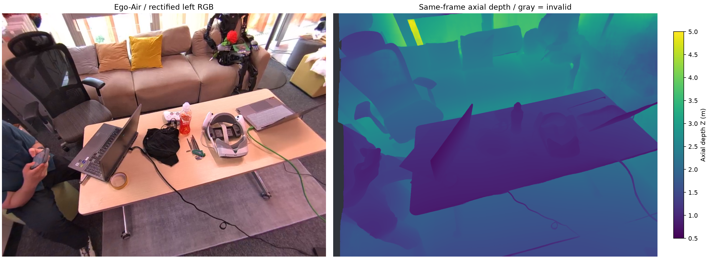
该帧约 97.56% 的像素具有有限的正深度值。检验标定时，可结合极线残差与跨视角重投影检查深度的几何一致性。评估绝对测距精度还需独立参考测量。
4.2 多目拼接：标准化虚拟视图与几何验证
多目拼接将不同朝向的相机图像组织到约定的投影与视野中，形成虚拟全景视图。通过统一投影、朝向和输出规格，可以减少不同设备在相机数量与布局上的差异，为跨设备数据对齐提供更一致的观测表达。
拼接也是验证内外参与特征匹配的方法：检查去畸变后的重叠区对应、融合前的对齐残差，并将特征恢复的相对姿态与标定外参比较，能够从实际图像反向检验几何一致性。
在统一虚拟像面上，可用单应变换的对齐误差衡量对应点是否重合：
其中 为齐次像素坐标， 将视图 映射到视图 ， 表示除以第三分量恢复二维坐标。 的单位为像素，同时受视差、匹配质量和变换模型影响，不单独等同于标定误差。
OpenCV 提供通用拼接接口 cv2.Stitcher_create，通过 stitch() 完成图像匹配、相机参数估计与全景合成：
import cv2
# images：按各自镜头模型完成去畸变、具有重叠视野的图像列表。
stitcher = cv2.Stitcher_create(cv2.Stitcher_PANORAMA)
status, panorama = stitcher.stitch(images)
if status != cv2.Stitcher_OK:
raise RuntimeError(f"Panorama stitching failed: {status}")
这是通用 API 示例。视频采用针对固定 rig 的处理流程：KB4 去畸变、SIFT 特征匹配、几何筛选与固定单应对齐，再投影到柱面并融合。当前拟合记录中，特征恢复的相对旋转与标定外参分别相差约 0.33°、0.36°，可作为旋转一致性的参考。
多相机光心不同，近场手物仍可能产生视差和遮挡；虚拟全景不能完全等同于单一光心的相机。因此，验证应保留融合前的匹配与残差，结合近场目标和动态接缝检查，而不能只看最终全景是否自然。
4.3 连续运动：从共同观测到统一空间定位
连续定位将头环与腕部的运动放入同一空间，为场景理解和操作分析提供位姿信息，也检验相机模型、时空标定与跨设备观测能否共同工作。本例使用 Duo 与双侧 Wristcam，处理链路为：
各设备图像＋IMU → 单设备 VIO
头环三维地图＋腕部 2D–3D 对应 → 跨设备地图定位
各设备里程计＋跨设备位姿约束 → 共同坐标系轨迹
以下 OpenCV API 用于说明关键几何步骤；展示结果来自既有 VIO 与跨设备定位管线。
4.3.1 特征匹配：建立共同观测
同相机跨帧匹配检查运动中的场景关联，头环—腕部匹配则建立不同视角间的共同观测。通用特征匹配可参考 cv2.SIFT_create、cv2.BFMatcher.knnMatch 与 cv2.drawMatches。对应点需经过几何筛选，并关注静态背景、像面覆盖与重复纹理。
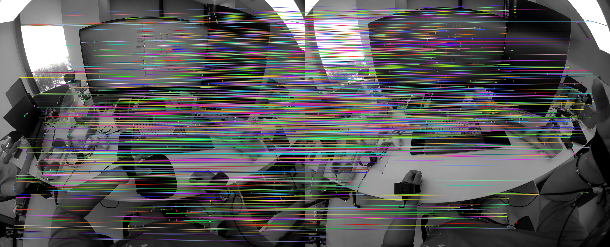
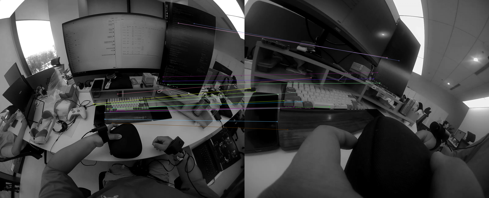
4.3.2 地图点回投：检查跨帧几何一致性
固定较早关键帧估计的三维地图点，用后续位姿和相机模型重新投影，比较预测位置与实际观测。针孔／Brown 模型可参考 cv2.projectPoints，KB4 模型对应 cv2.fisheye.projectPoints。
单个地图点的重投影误差为：
其中 为三维地图点， 为实际像素观测， 将地图坐标变换到相机坐标， 包含内参与畸变模型。该误差连接地图、位姿与标定，也是 PnP 位姿估计的重要优化依据。
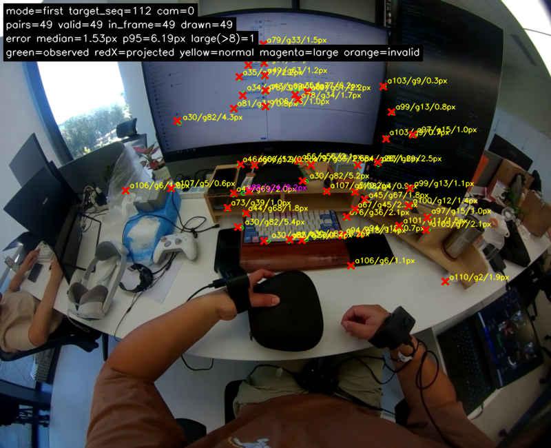
图中关键帧有 49 条有效观测，重投影误差中位数为 1.53 px、P95 为 6.19 px，单位为 800×650 图像上的像素。它检查地图点、位姿与标定的共同一致性；这些量来自同一定位管线，不是独立精度真值。
4.3.3 地图定位：将头环与腕部放入同一空间
将腕部图像特征关联到头环的三维 Landmark，形成 2D–3D 对应，再估计腕部在地图中的位姿。单相机定位可参考 cv2.solvePnPRansac；KB4 图像可先用 cv2.fisheye.undistortPoints 得到归一化像点，再以单位内参、无畸变求解。PnP 返回地图到相机的变换，求逆后才是相机在地图中的位姿。
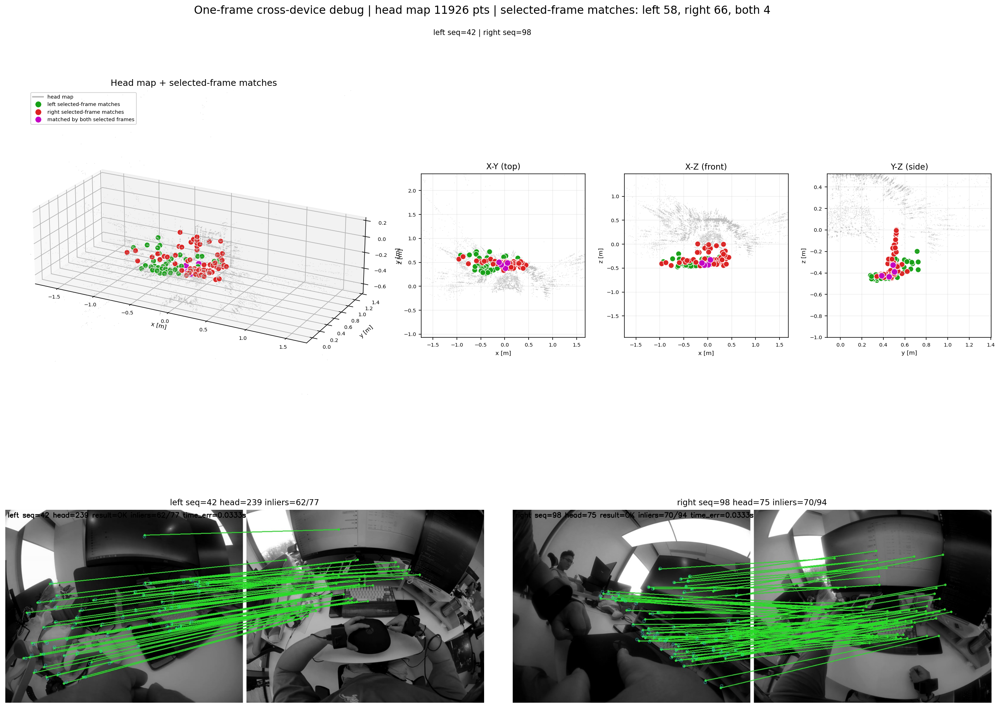
将跨设备定位约束与各设备的 VIO 里程计共同优化，可得到统一地图中的头环和双腕轨迹。在共同时间 下，腕部相对头环的位姿为：
其中 为地图、 为头环、 为腕部设备坐标系；相机位姿需先通过设备内外参转换到相应设备坐标系。
第五章：Virtual Camera 与标准化视觉观测接口
虚拟相机为不同分辨率、镜头模型和像素几何提供统一的观测接口，让下游按同一规范解释像素视线。
同一虚拟像素在各自约定的坐标系中对应同一方向；设备的世界位姿、光心、曝光、噪声、颜色和可见范围仍各不相同。
5.1 输出规范
Ego-Air 与 unitree_gd1 的示例共用以下输出配置，尚非所有设备的生产规格。
| 项目 | 本节示例的定义 | 需要保留的边界 |
|---|---|---|
| 投影与尺寸 | 左右共用针孔模型，输出各 640×480 | 输入是广角图，输出也不能继续标为原镜头模型 |
| 视角与内参 | 水平 100°、垂直 70°，主点位于图像中心 | 角度按中心扫描线两端像素中心定义，不等于硬件有效 FOV |
| 双目坐标 | 光轴平行，基线沿虚拟 X 轴，X 右、Y 下、Z 前 | 坐标方向改变，各自光心不移动 |
| 几何尺度 | 保留该标定快照中的真实基线，以米表示 | 不同设备或标定样例不能强行共用一个基线值 |
| 时间与有效区域 | 关联原始帧时间，并附各路几何采样 Mask | 几何重映射不改变曝光时刻，也不完成时钟校正 |
按像素中心端点 0…W−1、0…H−1 定义 FOV：
本例的虚拟内参为：
本配置允许 fx≠fy。若要求方形像素（fx=fy），垂直 FOV 由水平 FOV 和宽高比决定，不能再独立指定为 70°。resize 只改变尺寸；投影与朝向转换需要同时生成图像和对应内参。
5.2 统一投影与朝向，保留光心和真实基线
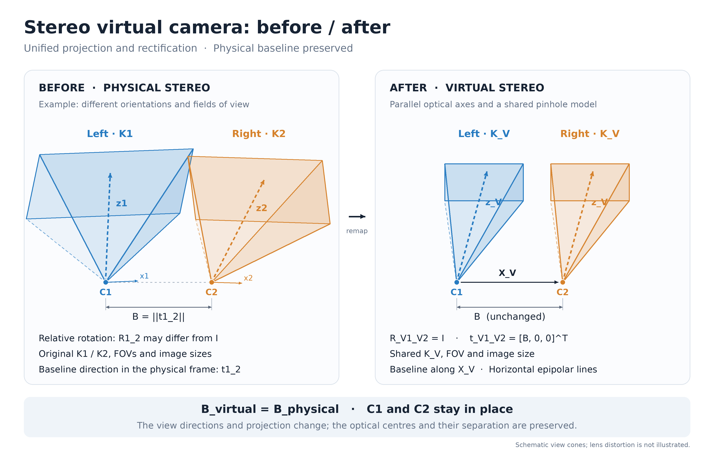
记物理左、右相机为 1、2，虚拟左、右为 V1、V2。沿用 T_A_B 将 B 系变换到 A 系的约定，t_1_2 表示右光心在物理左坐标系中的位置。
以真实基线为虚拟 X 轴，参考左相机前向确定其余两轴，再将左右光轴旋转到同一朝向：
虚拟右到虚拟左的外参为：
相机光心不移动，仅改用虚拟坐标系表达。以虚拟左为三维参考，投影矩阵为：
右到左外参中的 +B 与右投影矩阵中的 −fxB 来自相反的变换方向。深度计算需使用当前虚拟焦距、像素尺度及各自基线；不同型号或模型分支的内外参必须成套使用。
图像生成采用反向映射：由虚拟像素求视线，旋转到物理相机坐标后投影回原图，再插值采样。
同光心映射只旋转射线，无需深度；标定与输出配置固定后可预计算映射表。改变光心或物理基线则属于新视角合成，通常需要深度、三维重投影和遮挡处理，二维 Warp 无法普遍恢复未观测区域。
5.3 真实输出
5.3.1 Ego-Air：标准视图与有效区域
本例来自 Ego-Air 的 episode_20260720_150841，与第四章样例不同。前期对比中，SEUCM 在当前设备数据上的去畸变效果优于 PDCM，因此按 SEUCM 的成套标定生成虚拟双目，同步更新图像、旋转、基线和有效区域。
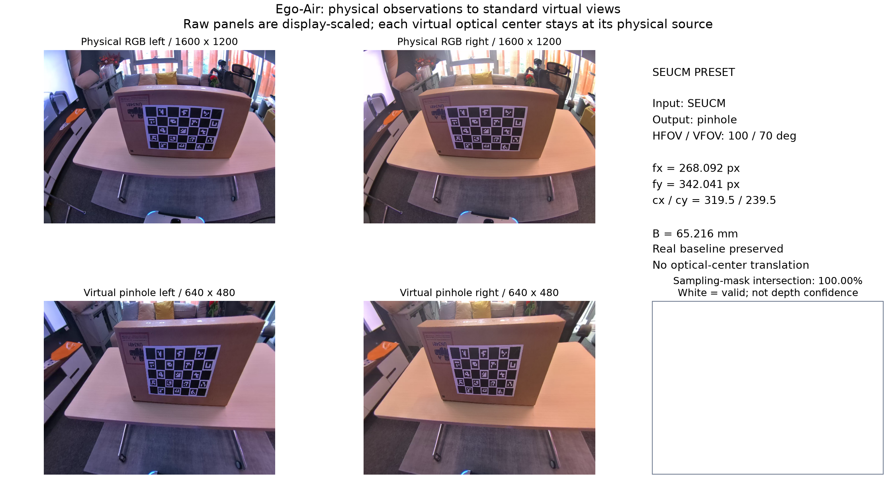
Mask 只检查源采样坐标有限且距图像边界至少一像素，不评估纹理、模糊、遮挡、镜头有效成像圈或匹配置信度，也不等同于深度有效区域。
valid_1 ∧ valid_2 是同坐标交集；实际匹配需分别检查 (u_left,v) 与 (u_right,v)。交集全白不代表任意深度、任意目标都具备无遮挡的双目观测。
扩大虚拟 FOV 可能增加边缘拉伸和无源区域，缩小则会丢失周边覆盖。输出分辨率提高也不增加光学细节，应按任务平衡覆盖、采样密度与有效区域。
5.3.2 Ego-Air 与 unitree_gd1：不同输入，共用输出定义
virtual_results_vfov70 包含两款设备的虚拟双目、标定及对应视差、米制深度和点云：
| 型号 | 物理单目输入尺寸 | 输入成像模型适配 | 虚拟单目输出尺寸 | 保留的基线／mm |
|---|---|---|---|---|
| Ego-Air（ego_air） | 1600×1200 | SEUCM，沿用前期验证后的选择 | 640×480 | 65.216 |
| unitree_gd1 | 640×480 | PDCM／Brown-Conrady，包含 k3 | 640×480 | 59.914 |
两款设备按各自物理模型接入，共用相同的虚拟针孔定义。结果中四个 K 矩阵一致，均输出 640×480、水平 100°／垂直 70°；各自的深度输入图也与保存的虚拟图逐像素一致。这是派生结果关联的核对，不要求两款设备的像素内容相同。
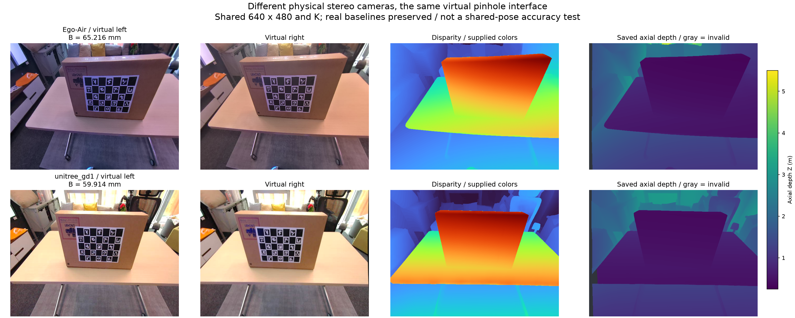
unitree_gd1；依次为虚拟左图、右图、视差和米制深度，均读取已有结果。深度统一显示为 0.25–5.5 m，灰色为非正值或非有限值，色条不表示量程。视差保留原配色，不能跨设备按颜色比较数值。下游可复用图像尺寸、K_V 和米制深度接口，匹配到深度的转换仍须使用各自基线。因此，两款设备的右投影矩阵平移项与 Q 不能直接复用，同一深度也可能对应不同视差。
两组图像并非同位姿、同曝光条件下的同步采集，不能用物体大小、颜色或估计深度是否相等评价虚拟化质量。展示直接读取已有 depth_meter.npy，未从视差色图反算、重跑推理或引入独立测距真值；模型版本、数值视差和绝对误差仍需关联评估。
三种处理的作用区别如下：
| 操作 | 主要目标 | 不能据此推导的结论 |
|---|---|---|
| 双目极线校正 | 将可信对应约束为水平搜索，便于视差和深度估计 | 图像看起来对齐，不代表标定与同步已通过精度验收 |
| 多目全景拼接 | 将多路观测组织为更宽的展示视野 | 多光心近场场景不能因此变成一台理想针孔相机的真实观测 |
| 虚拟相机映射 | 定义输出投影、视线与坐标接口；本例同时完成双目校正 | 统一投影不等于统一光心、基线、成像质量或世界位姿 |
代数与合成投影闭环检查核对了变换方向、像素尺度和深度公式，不能替代真实图像的独立检查，第四章实测残差仍待解决。图 17 是本章复现的转换，图 18 为已有推理输出，均不构成新增的绝对精度验收。
第六章：让质量验证进入规模化数据生产
规模化采集要验证数据能否在更换设备、人员或场景后，仍然满足任务要求。出现异常时，随数据保存的时间戳、设备标识、标定参数和处理版本，可以帮助把问题追溯到具体的采集片段和处理环节。
本文从设备产能出发，介绍了如何把不同设备的原始数据变成时空关系明确、可追溯的观测。后续文章会接着写真值产线，说明如何用这些观测生成训练所需的真值，以及如何判断生成结果是否达到交付要求。